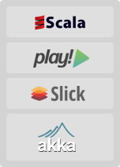

- Our Values
- Technologies
- Benefits
- Join Us
Our Values
At Kifi, we’re obsessed with creating a fantastic company culture. Yes, we’re also obsessed with our technology and product. But we believe that creating a challenging, rewarding environment for every employee is the key to Kifi’s success. These values motivate and guide us every day. If you’re inspired by them, too, you should join us.
Create products that matter
Above all, we want to invest our knowledge, energy, and creativity into improving people’s lives.
Work hard while having fun
Although we’re intensely focused on creating great products, we don’t sacrifice having fun along the way.
We are all Teachers & Students
Age and years of experience aren’t the only measures of knowledge. We learn from each other through thoughtful discussion in which every employee’s ideas are respectfully heard and considered.
Quality is everyone’s responsibility
It’s like seeing trash on the ground: Just because it’s not yours, doesn’t mean you can ignore it.
Check your ego at the door
It’s more important to do what’s best for the product than it is to be right.
Keep your mind open and flexible
We push ourselves to think beyond previous assumptions and adapt when new methods challenge our own.
Technologies
At Kifi we are passionate about the value our product will provide. We believe that in order to provide the highest value we must have the best engineers with access to the best tools.
We are using Continuous Deployment as our guiding developing methodology. Its means we trust our unit tests to tell us immediately when things go wrong and push our code to production continuously throughout the day. This gives us the possibility to have extremely short learning cycles by watching how our customers are using the code few minutes after we wrote it.
Our engineers care deeply about the quality of their code. The code base is tested after each commit, and we are meticulous about examining each exception in production and quickly fixing the code. We use libraries like Guice for dependency injection and in memory databases for testing so that we can verify that unit tests are both comprehensive and fast to execute.
 Using the right programming language increases productivity and makes developers happy. At Kifi we use Scala for backend development. On top of being a fun language to write in, Scala has a fast runtime, rich library support, and is easy to use in a parallel computation environment. We’re also using the Play! 2 Framework, which boosts our ability to write highly concurrent, fast processes. Naturally, we enjoy other high quality Scala libraries like Akka and Slick to make us even more productive.
Kifi engineers are solving fascinating challenges in the areas of Machine Learning, Information Retrieval, Artificial Intelligence, large-scale data analysis, and social graphs. We are passionate about the value of our product to the consumer. To make the user experience as simple and enjoyable as possible, we have world class experts in JavaScript and modern front-end technologies.
Working with us at Kifi, you will enjoy learning and collaborating with tech leads from leading companies like Google, LinkedIn, Oracle, and Netflix.
Benefits
The great psychologist Abraham Maslow astutely noted that in order for people to be able to solve highly complex problems, their safety needs must be satisfied first. Therefore, Kifi offers all employees full medical, vision, and dental coverage. We believe that you get what you pay for -- this applies to both salaries and hummus, because who are we to argue with Maslow?
We also believe in the power of happiness, so we devote tons of time to it. Our idea of happiness includes, but is not limited to:
- Ping-Pong tournaments
- A magical fridge that’s always packed with healthy food and drinks
- Continuous supplies of fresh hummus
- In-house smoothie development with pro-level blenders and smoothie-ologists
- Friday BBQ feasts
- Lively conversation
More perks to working at Kifi:
- Generous equity packages
- Contributing to a product with limitless potential
- Using new and advanced technologies
- Learning from and collaborating with the industry’s best engineers and product managers
- Experienced, knowledgeable leadership
And because we’re here five days a week, we made sure our workplace makes us happy. Our light and spacious office floats among treetops in a green corner of Mountain View, CA, with plenty of parking. Plus, we’re less than a mile from the Mountain View CalTrain and VTA stations, and two blocks from Hwy 101.